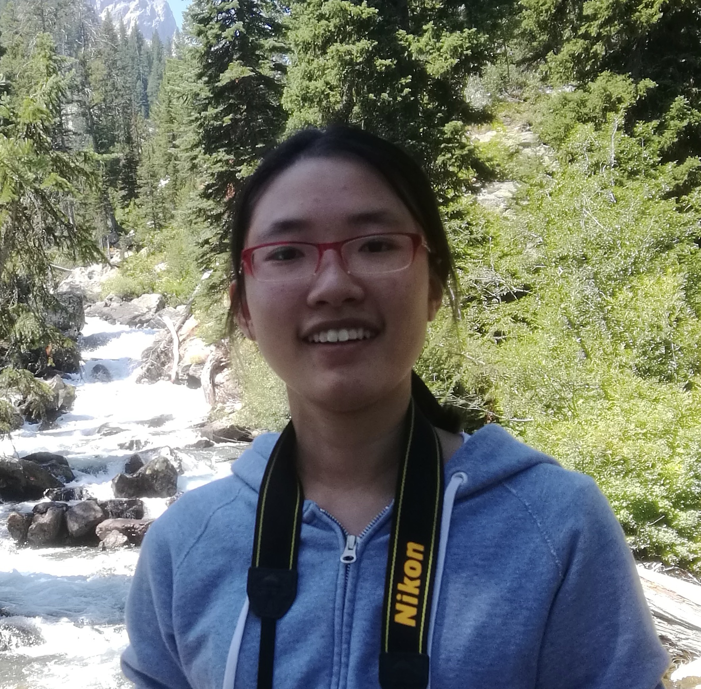
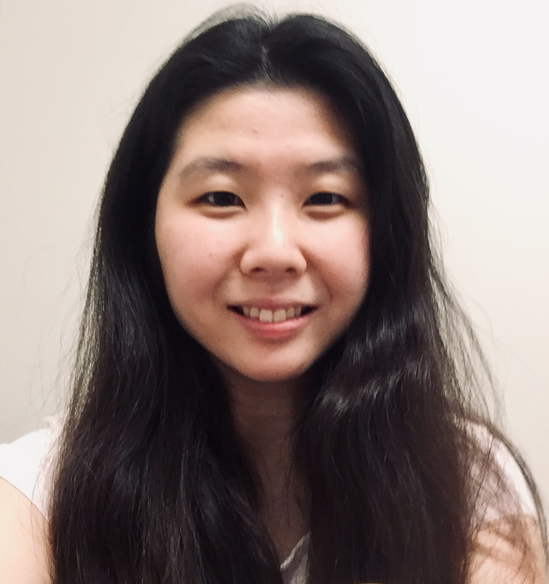
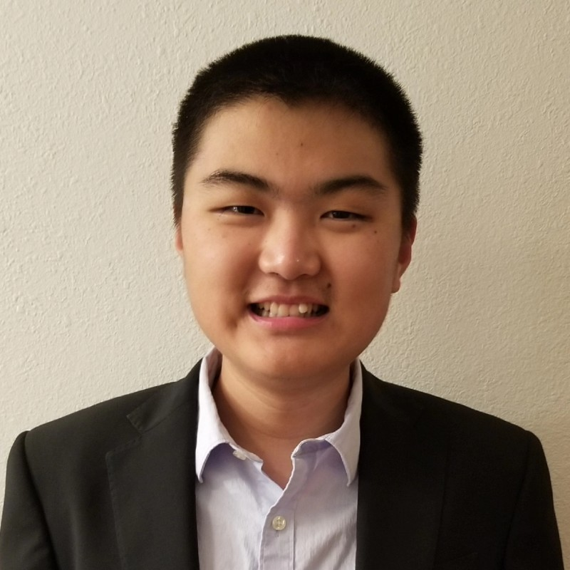
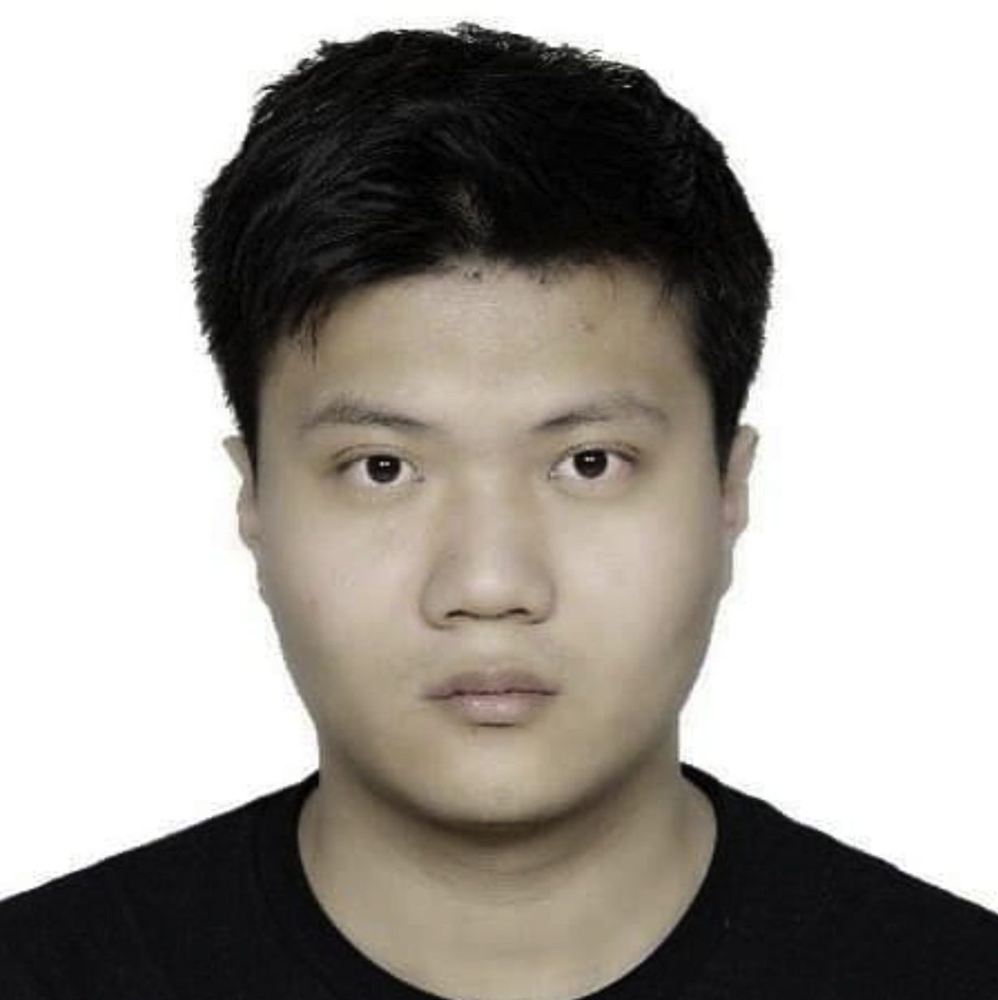
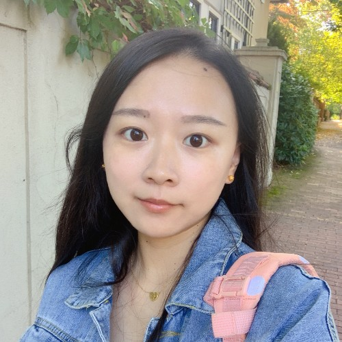

Tao Liu is Associate Professor of Biostatistics at Brown University, and Director of Brown ARCH Data and Research Method Core. He is also affiliated with Brown Center for Statistical Sciences (CSS), Data Science Initiative (DSI), Advance Center for Translational Research (CTR). Prior to joining Brown, he received his PhD from the Department of Biostatistics at the University of Pennsylvania. Dr Liu is Associate Editor of Biostatistics & Epidemiology, and Statistical Editor of Circulation: Arrhythmia and Electrophysiology, New England Journal of Medicine (NEJM): Evidence, and Chest. His research interests include:
Ph.D. Candidate
Ph.D. student
Master student
Master student
Master student
Tsinghua Univ.
Postdoc @JHU
Ph.D. @Brown
DS @Baltimore Ravens
Ph.D. (Sys. Engr) @GIT
.
Ph.D. (Finance) @VTU
The Blockstone Group
Ph.D. @Brown
Ph.D. @BU
DS @Univ Tübingen